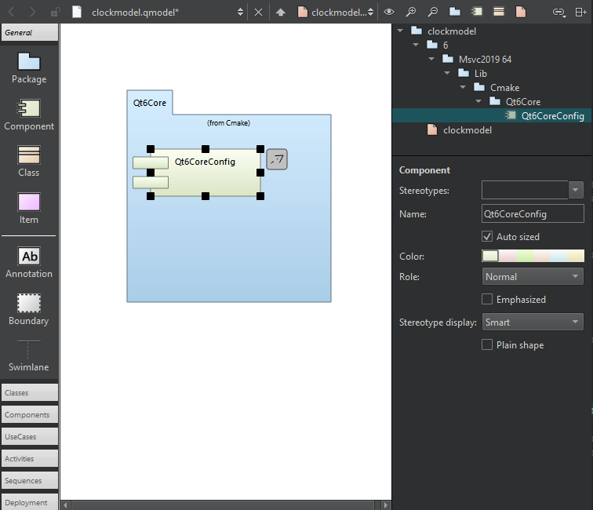

Create component diagrams
You can create UML-style models that contain component diagrams. They epresent a set of components and their relationships, and show the implementation of a system.
You can add source code components, such as libraries, databases, programs, and architectural layers to a component diagram. To add components to component diagrams, drag source code from Projects to the editor, and select Add Component.

A component diagram in the model editor.
To navigate from a component in a diagram to the source code, double-click the component in the editor or select Show Definition in the context menu.
See also Create class diagrams, Create package diagrams, Create UML-style models, and Model Editor.